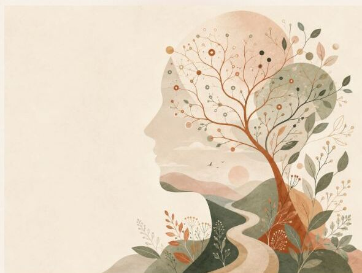

Escuta acolhedora
Um encontro sem julgamentos, dedicado a compreender sua história e suas necessidades.
Acolhimento · ciência · individualidade
Um espaço seguro para compreender o que você sente e construir caminhos possíveis, com clareza, acolhimento e cuidado individualizado.

Um encontro sem julgamentos, dedicado a compreender sua história e suas necessidades.
Planejamento terapêutico construído em conjunto e adaptado à singularidade de cada pessoa.
Condutas fundamentadas em evidências, explicadas com clareza e aplicadas com humanidade.
Sobre mim
Sou a Dra. Amanda Nelvo Eccard, médica formada pela UNIRIO, com atuação voltada à saúde mental. Minha prática reúne conhecimento científico, escuta atenta e respeito à história de cada paciente.
Atendo demandas relacionadas à ansiedade, depressão, burnout, sono, neurodivergência e outras questões que atravessam a saúde emocional e a qualidade de vida.
Formação
Graduação em Medicina pela Universidade Federal do Estado do Rio de Janeiro — UNIRIO.
Pós-graduação em Saúde Mental.
Pós-graduação em Psiquiatria pelo Hospital Israelita Albert Einstein. NÃO ESPECIALISTA.
Formação complementar em neuromodulação, sistema endocanabinoide, dor e reabilitação.
Atuação
Conteúdos
Contato
Atendimentos particulares em saúde mental, por telemedicina e presencialmente na Barra da Tijuca, Rio de Janeiro.
Este site e o WhatsApp de agendamento não são canais de emergência. Em situações de risco imediato ou agravamento importante, procure um serviço de urgência da sua região.